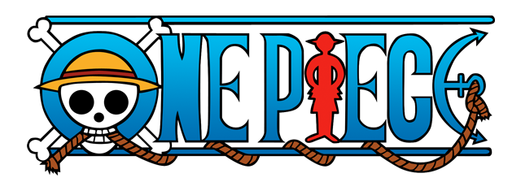

Barba Negra
Marshall D. Teach, também conhecido como Barba Negra, é o almirante dos Piratas do Barba Negra e membro dos Yonkou.Ele
também é a primeira e única pessoa na história conhecida por ter os poderes de duas Akuma no Mi.
Ele começou sua carreira de pirata como membro da 2ª Divisão dos Piratas do Barba Branca, até que ele assassinou Thatch,
comandante da 4ª divisão, para obter a Yami Yami no Mi, e em seguida desertou da tripulação. Antes do timeskip,
ele manteve brevemente a posição de Shichibukai, após entregar Ace para Marinha,porém teve de renunciar ao retornar
de Impel Down com prisioneiros de Nível 6.
Durante o timeskip, Teach passou a conquistar os territórios que antes pertenciam a Edward Newgate,
e formou uma aliança com Kuzan. Atualmente, Teach é considerado como parte da Pior Geração.
Devido as suas ações, ele pode ser considerado o antagonista terciário do Arco Impel Down, e um dos
principais antagonistas do Arco Marineford, e do restante do anime e mangá de One Piece em geral.
|
Akainu

Sakazuki, conhecido por seu apelido Akainu, é o atual almirante da frota da Marinha, sucedendo
o almirante da frota anterior Sengoku. Durante a primeira metade da série, ele foi um dos três
almirantes, e o último a aparecer na série. Ele ascendeu à
posição de almirante da frota depois de derrotar Kuzan em um duelo de dez dias que deixou Punk
Hazard em seu estado atual, metade congelada e metade em chamas. Uma de suas primeiras decisões foi a de mudar o
Quartel General da Marinha para o Novo Mundo, em preparação para a nova era dos Piratas.
No mangá, ele foi mencionado pela primeira vez por Nico Robin durante o encontro inicial com Aokiji.
No anime, ele foi mencionado anteriormente pelo vice-almirante Jonathan durante o Arco G-8, que foi ao ar após
Akainu tinha sido revelado no mangá. Por causa de suas ações, Akainu foi um dos principais adversários do Arco Marineford.
|
Aokiji
Kuzan, mais conhecido por seu epíteto Aokiji, é um antigo almirante da Marinha e o
primeiro a aparecer na série. Ele foi indicado por Sengoku para a posição de Almirante da Frota.
Entretanto, após perder o cargo para Sakazuki, ele deixou a Marinhae se afiliou com os Piratas do Barba Negra.
Ele é um antagonista secundário do Arco Long Ring Long Land, e junto com outros Marinheiros, ele é um dos principais
antagonistas do Arco Marineford.
|
Kizaru
Borsalino, mais conhecido por seu pseudônimo Kizaru, é um Almirante da Marinha.
Ele foi mencionado pela primeira vez por Robin durante o primeiro encontro com Aokiji. Por suas ações,
Kizaru pode
ser considerado o antagonista secundário do Arco Arquipélago de Sabaody e do Arco Marineford.
|
|